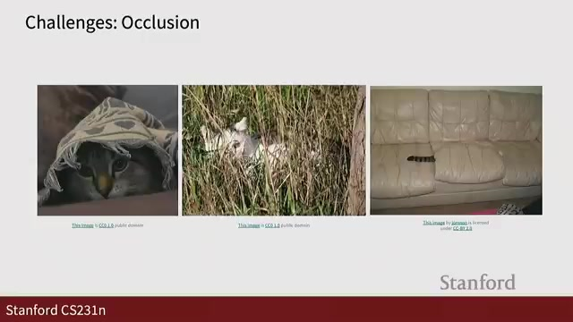
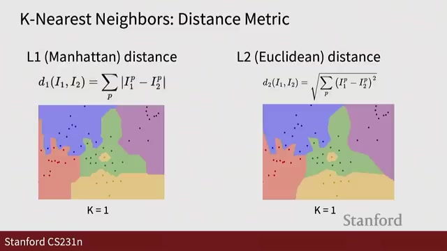
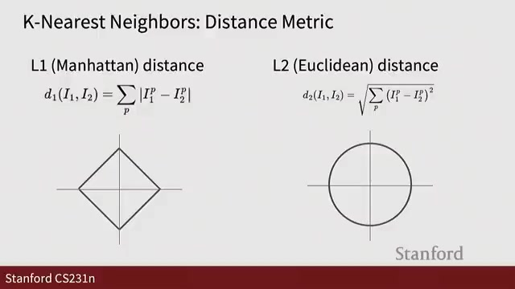
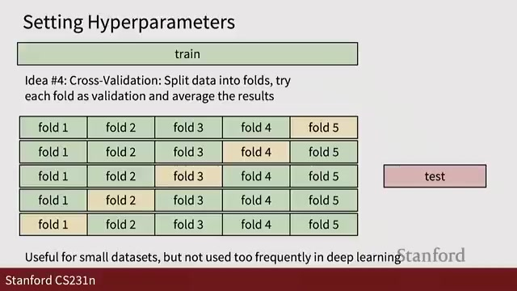
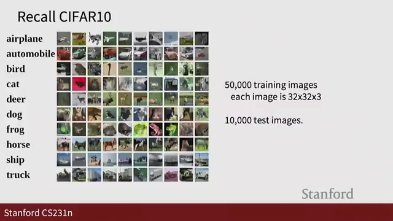
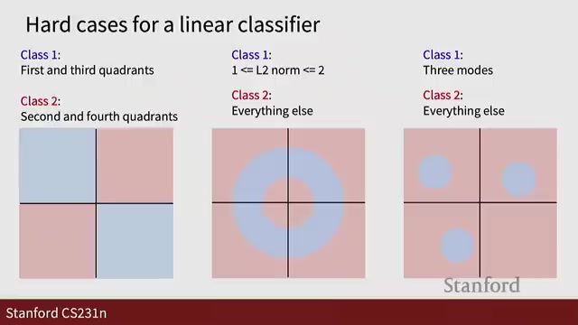
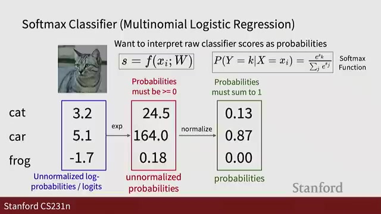

This summary highlights the key discussions from the lecture video, with visual frames captured at important moments.
Video: https://www.youtube.com/watch?v=pdqofxJeBN8

Image classification is the task of assigning a label from a fixed set (such as cat, dog, or truck) to an input image. While this is straightforward for humans, computers interpret images as numbers arranged in matrices or tensors.
For example, a color image sized 800x600 has three layers representing the Red, Green, and Blue (RGB) channels, forming an 800 x 600 x 3 tensor. The main challenge arises because small changes in camera position, lighting, or background can cause significant variations in pixel values—even when the object remains the same.
Understanding these fundamentals is crucial for appreciating how modern image classification systems operate and why data-driven methods have become the standard approach.
The nearest neighbor classifier is a straightforward, data-driven model used for labeling images based on similarity. It operates by comparing a test image to all stored training images and assigning the label of the most similar one.

The nearest neighbor classification method, while intuitive and effective in many scenarios, faces several challenges that can impact its accuracy and reliability.
One common issue is that sometimes the algorithm predicts a label based on noise or outliers in the data. To address this, increasing the value of K—the number of neighbors considered—helps by incorporating multiple neighbors into the decision process. However, this can lead to uncertain regions where neighbors disagree on the label, creating ambiguity.

In classification tasks, measuring the distance between images or feature vectors is crucial. Two popular distance functions used are L1 distance and L2 distance. Understanding their differences helps in choosing the right metric for your problem.
Choosing the right distance function is a key step in building effective classifiers and understanding your data's geometry.

The nearest neighbor classifier is a simple and intuitive method that serves as an excellent introduction to fundamental machine learning concepts such as distance functions and hyperparameters. Despite its simplicity, it has important limitations. For example, pixel-wise distances often fail in image classification because slight changes to an image can cause large differences in distance, even though humans perceive the images as essentially the same.
In summary, while nearest neighbor classification is foundational and insightful for understanding machine learning basics, real-world image classification demands more advanced methods to handle complexity and scale effectively.

Linear classifiers are fundamental building blocks in the world of neural networks and deep learning. They work by using learned weights to map input images to output scores for each class, enabling the model to make predictions based on the input data.
The core idea behind a linear classifier is to find a weight matrix W and a bias b that, when multiplied by the input vector x, produce scores corresponding to each class. This approach differs from methods like nearest neighbor classification because it learns parameters during training, summarizing knowledge in a fixed-size model.
Keep in mind:

Linear classifiers separate classes by creating decision boundaries in the feature space. In two dimensions, these boundaries are lines, while in higher dimensions, they become hyperplanes.
Each row of the weight matrix W acts as a template for a class. The classifier scores input images based on how well they match each template, effectively recognizing the class.
Linear boundaries have limitations:

To build an effective linear classifier, we need to learn the parameters W (weights) and the bias. This learning process revolves around using a loss function to measure how poorly the classifier performs on training data. Our ultimate goal is to minimize this loss by adjusting W accordingly.
Generated automatically from lecture transcript and video analysis.